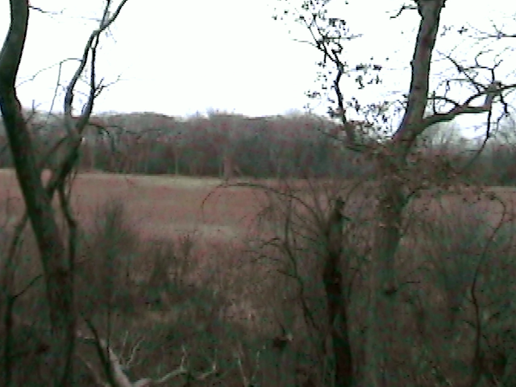

WRITINGS
Below I've assembled some of the key ideas upon which Explorations is
based so that you can start reaping the benefits of the LIFE-CHANGING
tools right away! (Check back regularly for updates and new posts!)
The 4 Tenets of Explorations
When I'm asked WHY Explorations is the most effective personal power
program in the world, it boils down to the simple, yet PROFOUND tools by
which we can ALL unlock and UNLEASH the ancient power coursing through
our veins at EVERY moment. Through my experience and training as a
legally licensed therapist, life coach, musician, martial artist,
entrepreneur, and spiritual guide, I have distilled EVERYTHING needed to
truly become ourselves into what I refer to as The Four Tenets of
Explorations. The application of each tenet of the program can vary
wildly based on the needs of the group or individual I'm working with at
the moment, and because of this I highly encourage each of you to seek
out one of my live seminars. However, I will try my best to capture the
spirit of each of the tenets here.
The First Tenet of Explorations - Relax
As you might expect from the first tenet of the most effective personal
power program in the country, Relax is the MOST important of the tenets,
but by far my LEAST favorite of them all, the reasons for which will be
clear in a moment. However, allow me a moment to provide some context in
which we can understand what I mean when I say Relax…
As you've most likely heard me state before, it is my belief that this
ancient, universal power, the power of The Next-Next Level, courses
through every facet of the universe. Big or small, microbe or galaxy, we
are all birthed and whither by virtue of the same tidal flow of this
cosmic energy of being. In and out. Here and gone. Each exhale of the
universe wiping away any memory of the breath before it. However, as the
universe breathes us into being, we are created with the exact same
limitless potential as every other corner of reality. Take nuclear
energy for example. A few decades ago, some of the great minds of
science discovered the massive, horrific energy potential lying in a
SINGLE ATOM.
What if I were to tell you that not only did every atom in your body
possess the power of an atomic bomb… but that this is merely the
BEGINNING? Each of us by virtue of merely BEING, have inherited the most
POWERFUL stores of energy that can be imagined: the one within the tidal
flow of cosmic energy, creation and destruction, being and non-being,
life and death.
Therefore, as another facet of the universe surrounding us, if this
power is a natural aspect of our being, then instead of having to work
to ATTAIN something we DON'T HAVE, we must find the ways in which we are
PSYCHICALLY DEFENDED against that which we ALREADY HAVE AND ARE.
Now, some of you might be asking yourselves: “Sure, Leslie. If I already
had something I wanted, why wouldn't I be using it?” This is a
deceptively DEEP question, one that gets to the core of what it means to
“want” in the first place, but allow me to say that this is EXACTLY the
question you should be asking. You see, our defenses against reality are
just as ANCIENT as the power we seek to UNLEASH inside of us, and
they're there for a reason! This ancient part of our minds and bodies
doesn't have time to play games, it defends us against things that
appear to be THREATS because they are just that! Threats to how we see
ourselves, our friends and family, our enemies, how to tell the
difference, the very structure of the world we all share, or how every
single facet of everything I just mentioned is actively decaying. The
reality of these things, as they are, are not merely irrational tricks
or anomalies to be worked through in meditation or therapy, or simply
pushed through and “conquered” through gumption and tenacity. Reality
presents a very REAL and IMMEDIATE threat to reality as we desire, or
even need, it to be.
It is precisely this dynamic that lies at the FOUNDATION of what it
means to RELAX at Explorations. The journey BACK to reality where our
true POWER and POTENTIAL lie in neglect and dormancy, is a process of
seeking out ways we avoid ourselves, each other, and anything that
reminds us of who and what we and reality TRULY are. RELAXING these
defenses, to put it plainly, is horrifically VIOLENT and extremely
PAINFUL as we face our greatest fears, traumas, and insecurities while
unleashing The Power of The Next-Next Level.
To properly Explore "relaxation," I often take up to an entire day of
one of my seminars. However, until you can make it to one, I'll simply
leave you with our deceptively simple, yet EFFECTIVE guiding principle,
one that you may rely on when navigating the process of relaxation as we
resist the temptation to “comfort” ourselves with delusions and fairy
tales and Relax into reality as it is: if it feels good, you're doing it
wrong.
Second Tenet of Explorations - Question
By far the most powerful is the second tenet, Question.
To question…Many are at least generally familiar with this idea. Most
children who've attended some kind of schooling will have been taught
the IMPORTANCE of science and the act of questioning anything and
everything. It is often referred to as one of the foundational pillars
on which our “modern,” “enlightened” world has been constructed. To its
credit and the credit of the great minds who've built the world we move
through, the nearly religious intensity with which we have questioned
reality has brought tremendous strides in human understanding, and while
this is good as far as it is good, it doesn't take a genius to notice
that something is...off.
Regardless of who you are or what you believe, white or blue collar,
black or white, man or woman, young or old, EVERY SINGLE PERSON I work
with tells me some variation of the same thing:
“Leslie, I just feel hopeless, like it doesn't matter what I or anybody
does,” or
“Leslie, I just feel directionless. Anything I could do is the same as
anything else,” or, worst yet,
“Leslie, I used to feel like I had potential to become something, now it
just feels like I'm waiting to DIE.”
Do any of these sound familiar? If they do, allow me to say, as a fully
and legally licensed therapist, that as miserable as this feels, it's
even worse than that. Mental illness is PANDEMIC, addiction is
SKYROCKETING, and suicide rates climb YEAR AFTER YEAR, and while there
are a great many and varied theories that explore this topic, NONE of
them provide a satisfying or usable framework through which we can
understand our current situation, let alone provide any means of
movement forward. I humbly present the current state of my thoughts on
this and how we here at Explorations RECLAIM and UNLOCK the once
powerful act of Questioning..
To reduce 17 or 18 hours of my seminar, I will say simply that the
historically trusted stewards of the Question, namely scientists and
thought leaders, have left us in an historically massive LURCH of mind,
body, and spirit, leading to the problems outlined above that we
experience directly and see in every direction we can look. This is
because of an important facet of their underlying pathology that until
the creation of this program, has gone unacknowledged and improperly
addressed. Whereas scientists will question themselves, each other, and
the world around them, they do so from a spiritually INSULATED position,
extremely removed from the position you and I occupy. Rather than faced
with the raw experience of being and its conflicts, success and failure,
love and hate, life and death, etc., they “question” from a place of
“enlightenment” aka Decadent Defense™ against the psychic pain and
misery that occupies the life of anyone reading this. Because of the
Decadent Defense of “enlightenment,' they are able to “question” not
from a place of abject irresolution, but in pursuit of "refining" or
"perfecting" their knowledge of the universe, a complete and unified
understanding of which is simply right around the corner at all times…
This seemingly minor distinction has wreaked an OBSCENE HAVOC on the
human spirit for CENTURIES, leading our greatest minds to CASTRATE
themselves and SUPPRESS the vast, ancient power coursing through their
minds and bodies. Minds that once dared to defy the distinction between
“invention” and “discovery,” minds that grabbed the engorged breasts of
the universe and milked out the wheel, the pyramids, electricity, etc.,
but now protectively hover over their dwindling, decaying pile of
“understanding” led by a neurotic anxiety that they can hardly whisper
aloud to themselves…
At Explorations, we offer an alternative approach. We see this failure
of experts for what it is, an egregious and flagrant failure to steward
the human race, and because of this, we DARE to take back what it means
to Question, and restore it to a STRENGTH that once led man from its
damp, fetid cave. We acknowledge that while we may learn during our
life's journey, we do not Question in order to progress, refine, or
perfect our knowledge or understanding of self, other, or shared
reality. Participants in my program recognize that, by virtue of being
done from a condition of simple, excruciating, and eternal conflict,
there is nothing to refine, protect, or achieve, and therefore the true
power of Question lies in its fundamentally DESTRUCTIVE nature, and that
by understanding this, we harness its VAST and truly LIMITLESS power.
From the tiniest observable minutiae of being to the largest systems
that govern our world, we here at Explorations set aside our feelings,
be they “positive” or “negative”, feelings of love and support or hate
and resentment, we Question to destroy anything that can be, without
hesitation or apology.
Third Tenet of Explorations - Express
Following the first two steps of the program, Relax and Question, in
which we allowed ourselves to view and experience reality as it
genuinely exists and then violently destroy that which can be destroyed,
we find ourselves at my personal favorite and, by far, the most
worthless tenet of the program, Express.
I'll begin with an image. Imagine for a moment, a human infant writhing
in gravel in the middle of an unmarked road. Naked, damp, cold, the most
vulnerable thing that could be imagined. Its screams pierce the soul of
anyone that could have possibly heard it...but there is no one. Whether
by exposure, a wild animal, or a passing car, this peeled little grape
will die soon, and its futile, desperate cries to a world it can't even
begin to conceive, will go unheard.
Whether upset or uplifted by this image, you can feel the deep, tragic,
resonant truth of it somewhere inside of you. Many people believe they
can change something about themselves or the world around them through
an act of self-expression. It could be raising your hand at a town hall
meeting, having that long overdue talk with a loved one, or perhaps when
I mentioned self-expression, your mind immediately went to the idea of
an artist.
Artists, ha. Most people, but especially artists, some of whom are
probably reading this right now, believe they can change something about
themselves or the world around them through what they do. If you're
familiar with these people and how they interact, then you're familiar
with how deep this belief goes. However, I've been lucky enough to work
with a few artists who hushedly admitted to me that at the end of a
project, one they truly felt they fully realized and pushed the
boundaries of what they thought they were capable, there is inevitably a
moment of stark clarity in which they can see time flowing through and
around their work, perceiving the edges of the project disintegrating
into the nothingness from which it arose, and realize in the core of the
heart and mind, that it was truly for nothing. They go on to describe
the perception of this truth as too grave to be sustained, quickly
replaced by the belief, certainly not exclusive to artists, that
self-expression is important or even essential to "humanity" or
"society" or whatever else.
The problem is that this is not only an inaccurate belief, but a defense
against a brutal but plainly obvious truth with inexhaustible amounts of
evidence: that their efforts and that of their peers will amount to
nothing. They and every single one of their efforts will individually
and collectively disintegrate into a churning flux of being and
non-being that will annihilate anything they do, are, or could have
been.
If that were the end of it, that would be bad, but it doesn't end there.
The “actualization of the self” or some other vague idea of
"transcendence" is not just wrong, it is a hideous and destructive myth.
To believe otherwise and to foster this belief in others is akin to the
worst abuse humanity has ever perpetrated on itself: a multi-level
marketing scheme built on self-castration and complete defeat of the
mind.
Whether you are an artist, activist, nurse, Puerto Rican, or however
else self-expression takes shape in your life, Express serves us as a
focal point through which we meditate on this truth. Nothing, nowhere,
for no reason, and to no discernible end but death, and only through the
realization of this in our lives are we able to UNLOCK and UNLEASH our
power of The Next-Next Level.
Fourth Tenet of Explorations - Explore
As with “Relax,” “Question,” and “Express,”, I will attempt to reduce
what normally occupies 8 or 9 hours during a seminar and capture the
essence of our fourth and final tenet of the most effective personal
power program in the world: Explore. The simplest way to phrase the
spirit of what Explore means for us is, “to draw the consequences of
being”. That is to say, after the horrific process of Relaxation, the
violent, destructive act of Questioning, and the impotent, annihilating
act of Expression, we have reached the end of the rope and lost any
capacity to hang on to even a single fiber any longer, and whether
through acceptance or defeat, we let go. Any hopes, dreams, or wishes
for the future of our selves, others, or the world around us have been
released from our hearts and minds. Through the work leading up to this
moment, we have surrendered to that which simply is and now, often
mournfully, bear the consequences of existing here and now. At this
final stage, there are no more questions of the depth of tragedy you can
see, hear, taste, or smell, rolling through and around you with no way
to interrupt or alter it.
Although the name of the program on the tip of everyone's tongue,
Explorations, seems to be popping up everywhere with anyone yearning for
a change, very few can be said to have fully utilized this final tenet.
While this remains an aspiration to most, the few who have Truly Become
are free from the barriers, shackles, and defenses that prevented them
from embodying who they truly are, finally accessing the power of The
Next-Next Level. These few wander among us as seemingly ordinary people,
but having unleashed a power inside of them that can no longer be
denied. With such clear and direct power to think, act, and speak, these
few truly Explore the world in a way all human beings possess the
potential to experience, yet only a few do.
Perhaps you feel a sense of resonance with what I'm sharing with you. If
so, I personally invite you to any of our events, online or in-person,
to come see for yourself. Until then, I will leave you with a question,
one that I asked at the beginning of our journey together on this fallen
website, and in my opinion, the only question worth asking at times like
this: are you ready to “draw the consequences of being?”... or to put it
plainly…
Are you ready to become yourself?
The Beauty of Nature

As there is always much left to “explore” even among the 4 tenets, this
meditation, however, is designed to serve as a baseline, a palette
cleanser, a splash of tonic after the many faceted journeys that one can
take through or within Explorations. You see, part of the reason
Explorations has been such an effective personal power program, is its
universality. Anyone with a pulse and an ability to hear and form simple
sentences can tap into their innate potential because the tools I've
created for you are simple. Relax, Question, Express, and Explore. While
many have made mountains out of mole hills, and others mole hills out of
their mountains, ha ha, one will always be faced with that which the
program is designed to access: reality, nothing more, nothing less. By
now, you have seen how successful The Program has been with people from
all walks of life regardless of race, religion, age, or abilities, and
to witness this firsthand as you all have can be overwhelming. Ha,
sometimes it's almost overwhelming for me, and it would be if I didn't
have absolute faith in not just Explorations, but you all as well, my
Explorers.
To begin our meditation on “The Beauty of Nature,” I'll start with a
question. One of the questions I get asked most by those newly
interested in getting started in the program is something to the effect
of, “How do you communicate to so many different people?” The answer is
simple, albeit not very gratifying. While I would love to take credit
for being some genius guru, some angelic figure who is able to
communicate in a way that transcends language, the answer is really just
that people are people. Our experiences, while they may look different
on the surface, are actually much, much more profoundly similar than we
would like to think. If there has been one difficulty that has marked my
experience in creating this program, it has been the same one many of
you struggle with on a constant basis: of seeing yourself in others,
others in yourself, following the path of this reality wherever it
leads, and fully drawing the consequences of this journey. Many
religions and belief systems like to appeal to this idea in their pitch
for support, as I'm sure you can think of some now. Buddhists professing
the unreality of the self, Christians preaching that we are all the lamb
children of God, The Father and Creator, Jews that all humans are made
in God's image… or modern scientists extolling that we are united in the
truth that we are all simply “star stuff,” as the late, great Carl Sagan
phrased it.
Now, while these historic and profound ideas have a dimension of truth
to them, the truth, in this situation, is not the problem. The problem
is that these frameworks of thought and belief are doomed to the same
fate: to eventually become defined by that which they are defended
against, their anathema, their antithesis…Their Other and their
inability to integrate it within themselves. Instead of this
excruciating process of metaphysical suicide that we prefer here, at
Explorations, they opt for the same thing humans always do: some sort of
divine, eternal war against some Other, substituting the blunt,
annihilating travesty of being for the euphoria of some tepid
pornography.
To be fair, on some level, all human beings sense this inherent conflict
at the core of nature and are tempted, time and time again, to write,
produce, direct, and then consume some version of this pornography; one
in which we all star in our own narrative as a classic victim/champion
of old, always in possession of the means by which Evil is subdued, and
the best of all possible futures is built. For the vast majority of
humanity lost in this delusion, the reality we acknowledge through
Explorations is so terrifying, so overwhelming that it must remain
mostly, if not wholly, unconscious, as does their true potential, the
power of The Next-Next Level.
Right about now, you might be wondering what this has to do with some
trees and rivers, ha ha. Well, I wanted to make sure that this principle
of Explorations is fresh in all of your minds, today: The principle of
The Calamity of Truth, or The Truth of Calamity, whichever you prefer.
In our pursuit of the power of The Next-Next Level we speak about so
frequently at Explorations, the integration of all being in our
perception of reality must by definition include that which is
non-includable, and that very much is applicable to “nature,” the
ultimate test of this principle. Now, for most of humanity in the modern
world, nature invokes a sense of peace, calm, a respite from the
conflict and dissonance that stalks us in our daily lives, all the while
deeply repressing the unnerving conflict at nature's core. Rather than
embracing the power of this dissonance through easily observed phenomena
such as suicide, starvation, schizophrenia, infanticide, rape, or even
just the mundanity of any of these things, most choose to use this
constructed specter of “nature” as any other perverted thing, as a
defense against that which they seek to embrace.
So, whether you're reading this for the first, second, or umpteenth
time, allow the Beauty of Nature to reveal itself to you in your life
today. What I mean is to allow the Beauty of Nature to take on that
which destroys itself in the process, Nature's “other”. Allow your mind
to explore the layers of nature, gradually uncovering that which you,
yourself, are defended against: the inconvenient, the detestable, the
hideous, the “unnatural”. As you endure your meditation today, your
thoughts and feelings regarding nature will indeed evolve, and as with
any evolution, this will include the death of many of these thoughts and
feelings. If you begin this process from a place of comfort, these small
deaths will be accompanied by discomfort. If you are beginning this
process from a place of unrest and listlessness, you will experience
these small deaths as abatement and relaxation. Allow the back-and-forth
of rest and unrest to evolve in your heart and mind, as this is the path
of The Next-Next Level we speak about so frequently at Exploration.
Namaste.
Understanding and Non-Understanding
In my travels and experiences, many “wise men” have urged me to push
through and see beyond binary thinking, telling me that the division is
only an illusion, that it's somehow my fault that I'm stuck there, and
that if I try hard enough, if I study enough, if I pray enough, if I
meditate enough…I will somehow transcend my primitive black-white
thinking and… I never completely understood…ascend into a realm of
post-knowledge?
There are things we know, and there are things we don't know. This may
seem obvious, but it's important to remember how profound of a reality
this is. Every single sentient being that's ever lived, from land to sea
since the cursed dawn of awareness sparked ablaze on our little blue
marble, has been faced with this basic dichotomy and has been forced to
engage in the reality of it in order to survive. When people ask me how
powerful this program can be, a lot of the time I simply ask them: how
scared are you of what lies outside of your vision? Put another way:
what is your relationship with the unknown? The border between these two
disparate realism and how we relate to it stand at the most fundamental
level of our consciousness, arguably the reason we developed
consciousness in the first place.
As we approach each of our limits we must accept the criteria by which
the border extends or contracts. Many emotions arise during this process
which MUST be included in the process and criteria of furthering our
understanding. Not the least of which is an acceptin gof the criteria by
which our understanding is derived and therefore limited. True for every
framework that mankind has ever used to attempt to perceive, grasp, and
navigate being, is that each framework will produce its signature
methods of generating and limiting its own understanding. The acceptance
fo the specific metaphysical lens by which self, other, and shared
reality is experienced should be accompanied with an overwhelming sense
of grief and mourning; knowing that while you seek to close the gap
between self and other, whatever IT may be, you will never truly achieve
it, until the final moment of defeat and annihilation, at which point
you will truly be EXPLORING.
Explorations is not here to substitute a version of religion for
science, science for religion, or refine the clarity of either. It's
actually quite the opposite. If this program is successful, it is an
explicit process of radicalization: radicalized to become, to put it
simply, yourself. You see, every framework for understanding attempts to
tackle the same, most basic phenomena every human being who has ever
existed is forced to experience and attempt to navigate. Self, Other,
and Shared Reality. Whether Christian, Hindu, Jewish, Muslim, or the
most dyed in the wool atheistic scientist, social worker or philosopher,
we are essentially presented with the same set of experiences and tools
by which to make sense of them, a fluxing tide of invention and
discovery, known and unknown, tangible and ethereal.
Sands of Innovation, Waves of Tomorrow
As I awake in the morning and I say yes to the universe, I am confronted
by that whch I am saying yes to. Assaulted. Overwhelmed. I say that I
say yes, but ultimately it is not that I have a choice. There is no
break or respite, no way to detach, disconnect, or truly dissociate. But
there is also no way to engage in a way that maintains agency or
integrity of any kind. I say that I say yes, but the experience I say
yes to washes over me in spite of my will, in spite of my “yes' or “no”.
It is so totalizing, so overwhelming that it's difficult to say if there
is a me that experiences the universe in the first place. The dissonance
of the experience, it obliterates that false pretenses on which I
believed I said yes or no, but in so doing creates the context of a yes
or no to follow, a self, if you can still call it that. My self.
At this intersection of experience and being, language falters. The
words we use to describe this excruciating nexus begin to fall apart and
eventually disintegrate because they are born posteriori by the thing
that they wish to describe, that is after the fact. To look into the
mouth of God, there is no language, no resolution, no understanding to
be had, and there is no answer to this except for desperation,
despondence, alienation. Should we near the present moment in our
journey together and feel a sense of elation, we should immediately and
violently abandon said path with extreme prejudice. Our friends and
family walking alongside us dispatched. “Connection” and “unification”
bring a poison into our lives, more potent than we could possibly dream
of.
This may seem rash, but I say this out of the most profound sense of
love for not just you, but every human being I come across. I look in
their eyes, and I see a vast ocean of suffering, anger, sadness and
frustration put everywhere except where it belongs, the present moment.
Religious vigor wasted in the church, political anger wasted at the
polls, scientific vigor wasted in our schools and universities. The
dissonance of being acts upon me as an ultrasound, disintegrating the
false, craggy defenses I have between me and being, me and reality, me
and the next next level, removing falsities and leaving what is left. It
is at this point I am able to think. I am able to act. I am able to love
and hate. I may act in any arena of human life no tas a fearful,
castrated man of modernity, but as an artifact of a castration so
profound it evades language, as a temporal fragment of resonance. Only
by allowing the universe to shake away these layers of falsity, by
allowing the universe to act upon us in spite of our saying “yes” or
“no”, will we truly unlock and unleash our true potential of The Next
Next level.
The Power of Spite
I knew a young man, angry, sad, and darkly depressed. He came into his
weekly session with me, and I could tell we had finally arrived at a
crossroads. We had been working up to this moment for months and months,
patiently parsing through his superficial, surface-level problems,
money, relationships, job, what he's doing with his life, etc. I could
tell right away, however, that his case was similar to the problem I see
with nearly every person I work with, regardless of age, culture,
gender, or anything else that distinguishes us from one another, this
young man's problem was just about as profound and universal as it gets:
whether to continue living or not. This is his story, one of an infinite
number of examples in which spite can empower each of us to unleash The
Power of The Next-Next Level.
The beginning of our time working together, much of it was filled with
relatively superficial conversation, but as time increased, the
suppression of emotions relaxed as it normally does. As our conversation
grew less superficial, though, the time we spent together grew
increasingly silent, the gaps in conversation broken up with
intermittent allusions to being “so tired” or just wanting it “to stop”.
So during our final session together, we began sitting in silence for
nearly the entire duration. The silence we spent with each other that
day was anything but empty though. I knew what he was feeling, and he
knew that I knew, an unbearable pressure, an encroaching point of
inevitability that we had worked diligently to uncover and bring about.
For as dark as he was, the silence itself took on a glow in and of
itself, and as our time came to a close, I simply bid him a, “good
luck,” and through moistened eyes, he grabbed his coat and left my
office. After much work, we arrived at his Crossroads alone, together…
That night, as he would later describe to me, he sat naked in a bathtub
with any manner of methods of “concluding his sojourn with
Explorations,” so to speak. He stared at them on the ledge of the filthy
tub, alternating his focus between the bye-bye tools and his soft, wet,
pale body. He would pick one up, prod and pinch at his body, and think
and feel what there was to think or feel. As he Explored his mind and
body in that moment, he found himself fully immersed in the process of
the future approaching, becoming the present for a perpetually
excruciating and terrifying moment of near total defeat, only to recede
into a past that disintegrated more quickly than it could be accounted.
Finally, with a damp steak knife in his hand, he described to me
noticing something small that pushed him past his Final Threshold: the
water pouring from the bath's faucet was now cold. The Final Threshold
had been breached, inevitability set in motion.
You see, his disgusting tub and the time he regularly spent in it were
his final moments of reprieve from a very bleak monotony, the final
weight-bearing wall of his internal life, and he had brought up in
session nearly every week, the exhausting back-and-forth with his
landlord about getting this goddamn-ass fucking piece of fucking dogshit
water heater fixed. Messages, calls, emails, little stops in his office,
only ever to be shrugged off or placated, to which I only ever responded
by stoking the growing fire, “That would upset me too, I might even do
something extreme.” That night, as he sat there for what could just as
easily have been his final moments alive, an overwhelming, unconscious
rage would take hold of his mind, transforming his body from a place of
loathing and decay, to a kinetic vessel of spiritual electricity. As if
possessed, he now looked upon the tools of self-destruction with
disdain, shoving them off the tub's ledge, rose out of the tepid water
and broke his hand while trying to punch a hole in the drywall nearby.
However, rather than fueling the sense of defeat that nearly took his
life, the splintered bones in his hand only fomented the kindling
flames. The rage he held for those that inflicted this cold water on him
would reshape his life from that point on. Stalking, harassing,
assaulting his landlord and those that worked in the office, he from
then on carried a boundless, sleepless energy devoted to ruining the
life of those who dismissed the few final threads by which his life
clung. As he wrote to me in a letter from prison, he eventually didn't
even care whether any water was ever warm again, describing a clarifying
attachment to cold, tepid, stagnant water from then on. Through the
power of spite, he Truly Became himself that night.
As inspiring as this is, this is but one story, however, in an infinite
number of ways spite can and should be used as a tool for our physical,
mental, and spiritual health. As any of our brothers and sisters
surviving off the grid will tell you, having a means by which fire may
be easily and kindled, stoked, and allowed to spread can be the
difference between life and death.. So, in light of the transformational
power of this profound yet ancient spiritual tool, let's ask ourselves,
tonight:
How might I use the desire to antagonize, annoy, or offend someone to
truly Become Myself? What are some useful, reliable sources of spite
in our own lives?
Origin of The Power of The Next-Next Level
To get the idea of how Explorations works and the level of POWER I'm
going teach you to access, we need to have some kind of understanding of
WHAT this power is and WHERE it comes from in the first place. Now, one
thing that makes this program so effective for so many different kinds
of people, is that Explorations is built on a very simple, some might
say ancient premise, acknowledged by religious and scientific leaders
all over the world for thousands of years: that YOU are the UNIVERSE.
You may have heard this before, or this sentence may sound simplistic
and cliche, but allow me to elaborate and provide some perspective
because the RESULTS could alter the course of your life…
In order to provide a proper context for The Power of The Next-Next
Level that we speak about so frequently here at Explorations, come with
me while we travel back in time, ha. Let's rewind the clock…all the way
back to the beginning…of everything. That's right, the beginning of
everything in which “anything” emerged, separating itself from
“nothing”. This moment in which space, time, matter or energy, breached
the threshold of reality and began its existence, was an undeniably
MOMENTOUS occasion, birthing literally everything that ever was, is, or
will be. Every atom, molecule, star, or planet; every plant, animal, or
human being; every tool, technology, or invention that has ever been or
will ever come to be, began at this very moment. Since this time, the
universe has kept on, well, being, and while it's been at it, it's
insisted on continually EXPANDING and ORGANIZING itself. From
nothingness, being began, and thus began the long, journey through
immeasurable time and infinite combinations…all the way to this moment,
to you and me, right here and now, as I write this sentence and you read
it.
As I've traveled the world to share the program of Explorations, I've
had the privilege and honor with working with many different kinds of
people, but along the way I've noticed some trends. Normally, after I
tell someone what I just shared with you, I receive one of two
responses, and while the exact percentage can vary based on external
factors, overall it splits pretty evenly. The first one is one of
elation and excitement. To be reminded that you are part of the
universe, but a single, conscious node in a vast network of existence
that exists in time and space, but also made of the same stuff that
necessitated the creation of time and space to begin with, wow. And on
top of that, that they have as much of a RIGHT to tap into this POWER as
anyone that has ever existed…you can understand why someone might be
excited! Then, there's the other camp. Rather than excitement and
enthusiasm that they are part of this universe, after I ask them how
they feel about this truth of the universe, they shyly start telling me
how small and insignificant they feel. Thinking about the MASSIVE forces
moving through and around them, they feel as small as a bug about to be
crushed and wiped from the memory of everything. Weak and insignificant,
they see the details of their lives rendered redundant, small, and
pointless. You can understand why someone might feel this way too!
Now, it might seem funny to you, but during this talk that I have with
groups of thousands at one of my seminars or in a one-on-one coaching
session, and I hear their reactions of energized enthusiasm or profound
woe, I actually have the same answer, and I want everyone to listen very
closely because this is possibly the most important facet of
Explorations, a principle upon which everything that you're going to
learn is founded. The answer that I give to everyone regardless of their
emotional reaction to The Bad News: “Yes.” … Yes! Of course! As each of
you dip your toe into the water of The Next-Next Level, you will have
different reactions, but I'm here to tell you that they are correct!
This ENERGY and POWER I'm going to teach you to unlock, this SOURCE
POWER that drives the very EXISTENCE of anything that can or will ever
be, it is unlike anything you've ever experienced before and WILL, not
MIGHT, it WILL change your life forever. Is this good? For many, yes!
You're not here because your lives are great, you're here to change. But
like any change, is it also going to be BAD? YOU BET.
To be in touch with the ancient yet profound power of The Next-Next
Level is to be in touch not just with good, not just with bad, but to
become ONE with the animating force that creates each, that creates you,
that necessitates anything and everything. The origin of The Power of
The Next-Next Level will show you the “you” that you've barely allowed
yourself to dream of and whisper to yourself, but it is also the source
of not just dissonance, not just anguish, but of an annihilating
preconscious storm that will call all of its children home in the end.